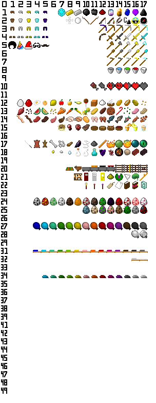

Herramientas útiles para MineBlocks
Crea estructuras y comandos de invocación para MineBlocks de manera fácil y rápida.
En progreso Old VersionAnaliza y visualiza estadísticas de mundos de MineBlocks. Obtén información detallada sobre tu mundo.
Próximamente Personaliza y previsualiza skins para tu personaje en MineBlocks.
Disponible